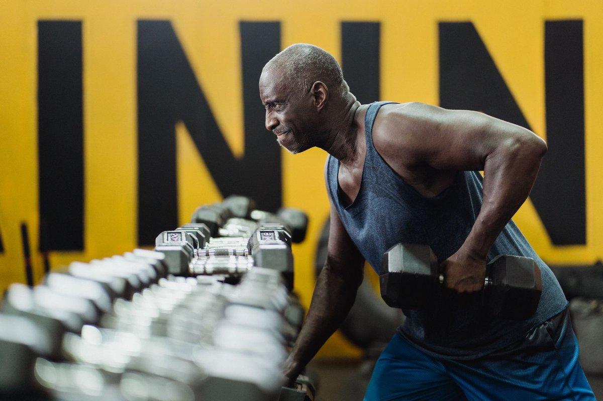

Only One Workout Helped Older Adults Lose Fat And Keep Muscle

Key takeaways
- I remember watching my 62-year-old neighbor spend hours on the treadmill every morning, only to look more exhausted and less toned every month.
- When I turned 50, I fell into the exact same trap—sweating through endless cardio while my muscle mass visibly evapo
- Track what feels sustainable and adjust gradually.
I remember watching my 62-year-old neighbor spend hours on the treadmill every morning, only to look more exhausted and less toned every month. When I turned 50, I fell into the exact same trap—sweating through endless cardio while my muscle mass visibly evaporated and my joints constantly ached. It was agonizing to realize that Only One Workout Helped Older Adults Lose Fat And Keep Muscle, and it wasn't the hours of soul-crushing aerobic exercise I had been forcing myself to endure.
After diving deep into recent clinical research, I overhauled my routine and realized that heavy cardio often elevates cortisol, pushing mature bodies to burn precious muscle tissue instead of fat. Resistance training, specifically slow and controlled strength exercises, turned out to be the absolute gold standard for metabolic health. Check out this related healthy tip on managing midlife cortisol levels.
When you focus on strength, your body sends a strong signal to retain lean tissue even while in a calorie deficit. To keep your joints safe while achieving these metabolic wins, you can start building muscle right at home using a versatile Resistance Bands Set to provide continuous tension without heavy iron weight stress.
If you are struggling with daily consistency, read our another practical guide on habit stacking for active adults. Adding tension exercises twice a week triggers muscle protein synthesis, preventing age-related sarcopenia while forcing your body to draw energy straight from deep fat stores.
I used to think lifting meant heavy barbells at a crowded gym, but controlled resistance movements like seated band rows, chest presses, and supported squats work even better for body composition. Review this similar wellness insight to see how low-impact loading improves bone density alongside lean muscle retention.
The 2-Minute Win
Grab a comfortable band right now, step on the center with both feet, and perform 10 slow, controlled bicep curls taking 3 seconds to lower down. This simple eccentric movement immediately activates muscle fibers and sends a signal to preserve lean mass!
It is crucial to remember that consistency beats intensity every single time when you are rebuilding your metabolism. Bookmark this stay consistent with this strategy to protect your momentum during busy weeks.
Forget burning out on the elliptical; focus on squeezing the targeted muscle through a smooth range of motion to build strength without joint pain.
By shifting your focus from burning arbitrary calories to preserving your vital muscular foundation, you will notice improved energy, better posture, and effortless weight management. For more ideas on healthy aging, explore more home-workouts guides to keep your routine fresh.
Educational only — not medical advice.
Disclosure: This page may contain affiliate links.
Recommended Reading
- The Ultimate Guide to Daily Hydration: Boost Energy & Wellness
- Creatine May Help Build Muscle Even Without Exercise, Researchers Find
- Unlock Your Best Sleep: Energy, Focus & Health Tips
More in home-workouts
 home-workouts
home-workoutsFeel More Energized with This Practical Home Workouts Routine
Boost energy with effective Home Workouts designed for small spaces. No equipment needed—just simple strength exercises
Read article → home-workouts
home-workoutsHow I Finally Made Home Workouts Stick in a Tiny Apartment
Discover how I made Home Workouts stick in a small apartment using no equipment. Build strength and stay consistent with
Read article →Related posts
home-workoutsFeel More Energized with This Practical Home Workouts Routine
Boost energy with effective Home Workouts designed for small spaces. No equipment needed—just simple strength exercises
Read article →home-workoutsHow I Finally Made Home Workouts Stick in a Tiny Apartment
Discover how I made Home Workouts stick in a small apartment using no equipment. Build strength and stay consistent with
Read article → home-workouts
home-workoutsHome Strength: No Equipment, Maximum Impact
Discover how to build strength at home with no equipment. This guide offers effective, space-saving workouts for real re
Read article →